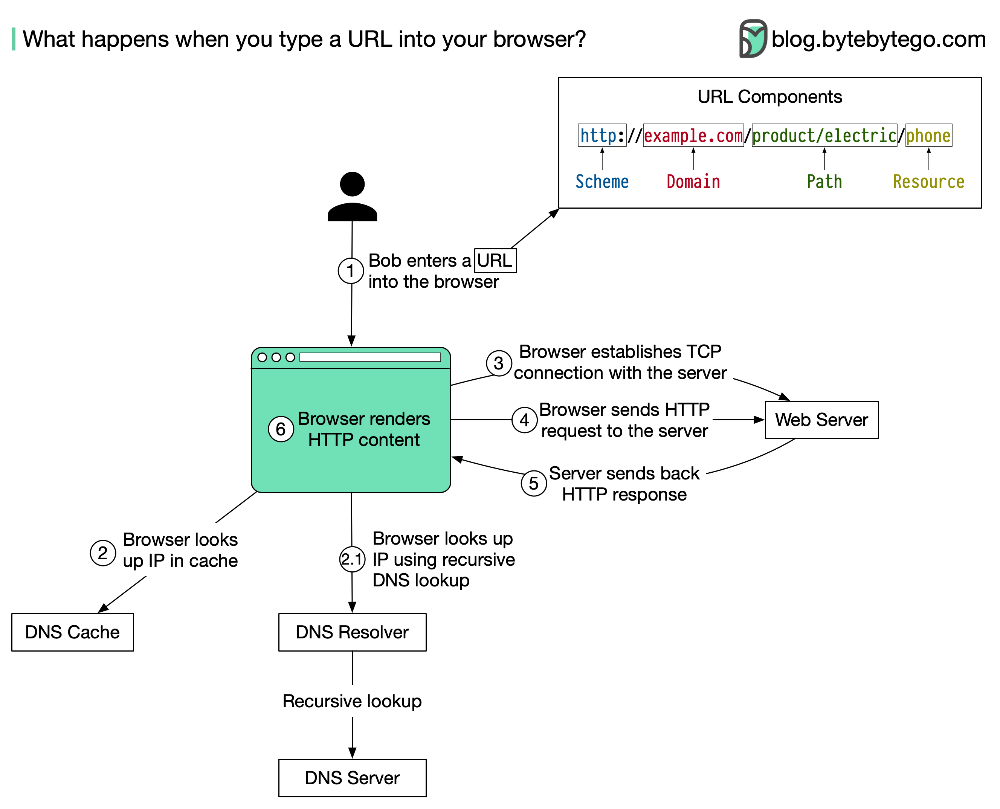

The diagram above illustrates the steps.
Bob enters a URL into the browser and hits Enter. In this example, the URL is composed of 4 parts:
The browser looks up the IP address for the domain with a domain name system (DNS) lookup. To make the lookup process fast, data is cached at different layers: browser cache, OS cache, local network cache, and ISP cache.
Now that we have the IP address of the server, the browser establishes a TCP connection with the server.
The browser sends an HTTP request to the server. The request looks like this:
𝘎𝘌𝘛 /𝘱𝘩𝘰𝘯𝘦 𝘏𝘛𝘛𝘗/1.1
𝘏𝘰𝘴𝘵: 𝘦𝘹𝘢𝘮𝘱𝘭𝘦.𝘤𝘰𝘮The server processes the request and sends back the response. For a successful response (the status code is 200). The HTML response might look like this:
𝘏𝘛𝘛𝘗/1.1 200 𝘖𝘒
𝘋𝘢𝘵𝘦: 𝘚𝘶𝘯, 30 𝘑𝘢𝘯 2022 00:01:01 𝘎𝘔𝘛
𝘚𝘦𝘳𝘷𝘦𝘳: 𝘈𝘱𝘢𝘤𝘩𝘦
𝘊𝘰𝘯𝘵𝘦𝘯𝘵-𝘛𝘺𝘱𝘦: 𝘵𝘦𝘹𝘵/𝘩𝘵𝘮𝘭; 𝘤𝘩𝘢𝘳𝘴𝘦𝘵=𝘶𝘵𝘧-8
<**!𝘋𝘖𝘊𝘛𝘠𝘗𝘌** 𝘩𝘵𝘮𝘭>
<**𝘩𝘵𝘮𝘭** 𝘭𝘢𝘯𝘨="𝘦𝘯">
𝘏𝘦𝘭𝘭𝘰 𝘸𝘰𝘳𝘭𝘥
</**𝘩𝘵𝘮𝘭**\>The browser renders the HTML content.